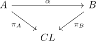
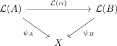
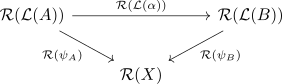
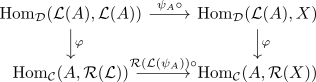
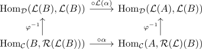
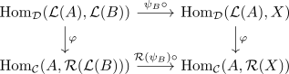
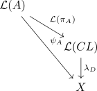
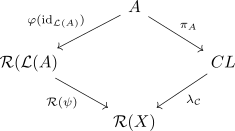
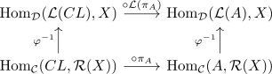

left adjoint preserves colimits
Proposition
Let $\mathcal{C}, \mathcal{D}$ be categories, $\mathcal{L}: \mathcal{C} \rightarrow \mathcal{D}, \mathcal{R}: \mathcal{D} \rightarrow \mathcal{C}$ functors and $L \dashv R$ adjoints with $\mathcal{L}$ as left adjoint. Then $\mathcal{L}$ preserves colimits
Proof
construction and uniqueness
Consider following cocone in $\mathcal{C}$, where $CL$ is a colimit.

Applying $\mathcal{L}$ results in following cocone
Suppose there exists an object $X \in \mathcal{D}$ and morphisms making following diagram commute

Then we have to show, that there exists a unique morphism $\mathcal{L}(CL) \rightarrow X$ making the diagram commute. Applying $\mathcal{R}$ results in

By adjointness, we get an adjunction
Let $\varphi(\mathrm{id}_{\mathcal{L}(A)}) \in \mathrm{Hom}_{\mathcal{C}}(A, \mathcal{R}(\mathcal{L}(A))), \varphi(\mathrm{id}_{\mathcal{L}(B)}) \in \mathrm{Hom}_{\mathcal{C}}(B, \mathcal{R}(\mathcal{L}(B)))$. By naturalness of $\varphi$ we get following commutative diagrams 1

and precomposition

respectively

Thus applying to
Hence
is a cocone By universal property of $CL$, there exists a unique morphism
and by adjointness
Thus there exists a unique morphism
commuting
w.l.o.g. for

the other side follows analogue
By assumption

By adjointness, we get following commuting diagram

and thus
Furthermore, since
we get
Hence we finally get
Alternative short version
Let $\mathrm{colim}_{I}(X_i)$ be a colimit. Then we get by definition of a left adjoint
Using that contravariant hom-functor dualizes small colimits to limits we get
Again applying the adjunction and dualizing colimits gives
Footnotes
- slight abuse of notation, formally we would compose with $\mathrm{id}$ on the other side. ↩